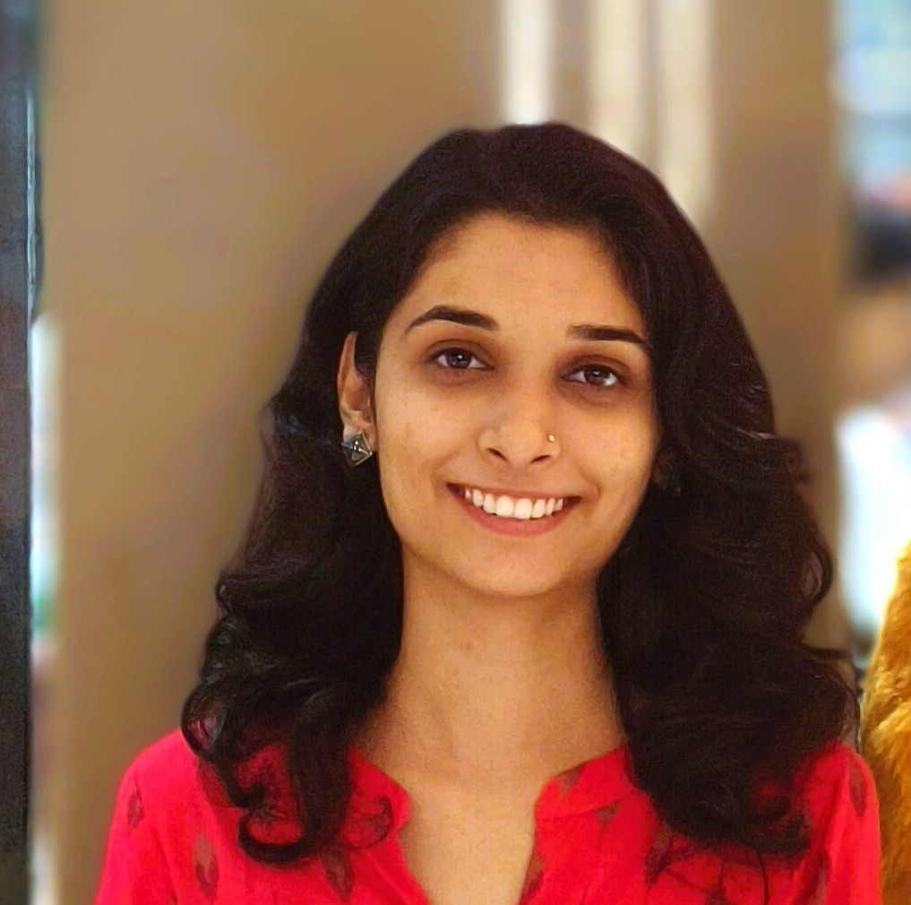

Computer Science Engineering Graduate | C/C++ | Networking | Data Analytics | Linux | Windows | AWS EC2 | Entry-Level Software & IT Professional

Computer Science Engineering graduate from GH Raisoni University, Amravati, with strong skills in C/C++, Networking, Data Analytics, Linux, Windows, and AWS EC2. Experienced in software development, system administration, and problem-solving through academic projects and industry internship experience. Passionate about learning new technologies, analyzing data, and building efficient technical solutions. Seeking an entry-level opportunity to apply technical expertise, contribute to organizational growth, and develop a successful career in the IT industry.
CGPA: 7.05
Percentage: 76.17%
Percentage: 86.40%
Duration: 6 Months
Gained hands-on experience in software development, networking, Linux and Windows environments, REST APIs, and programming using C and C++.
A fully responsive portfolio website developed to showcase my skills, education, internship experience, certifications, and projects with a modern and interactive user interface.
Technologies: HTML5, CSS3, JavaScript
Features:
Name: Nandini Raut
Email: rautnandini21@gmail.com
Phone: 8080768443
GitHub: github.com/nandu23-maker
LinkedIn: LinkedIn Profile